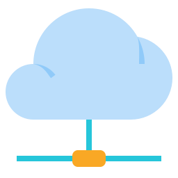

Prérequis

JRE 8
Pour faire fonctionner l'application vous avez besoin de la java runtime environement dans sa version 8 minimum.A jour de préférence.

A moins que votre serveur IRC soit héberger sur votre réseau local.
Connexion Internet
Le protocole Internet Chat Relay a besoin d'être connecté a internet pour fonctionner.A moins que votre serveur IRC soit héberger sur votre réseau local.